Bar plots
How can I reorder the bars in a bar plot by their value?
Change the order of the levels of the factor variable you’re creating
the bar plot for in the aesthetic mapping. The
forcats package offers a variety of options for doing this, such as
forcats::fct_infreq() for ordering by the number of
observations within each level.
See example
The following bar plot shows the number of cars that fall into each
class category. Classes are ordered alphabetically. You
might prefer them to be ordered by the number of cars in each class.
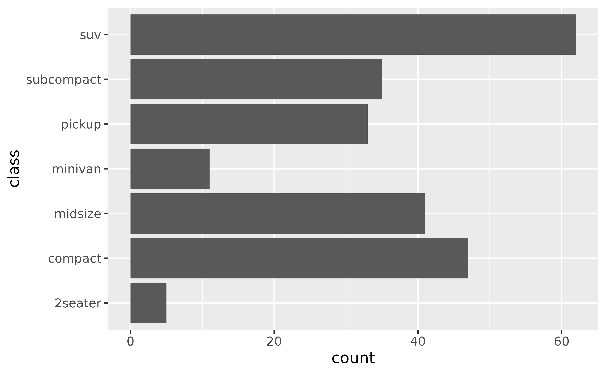
To do this, you can use forcats::fct_infreq().
ggplot(mpg, aes(y = forcats::fct_infreq(class))) +
geom_bar()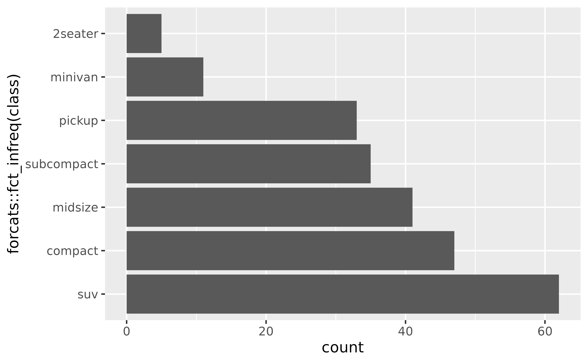
If you’d like to plot the highest value first, you can also reverse
the order with forcats::fct_rev(). You might also want to
simplify the axis label.
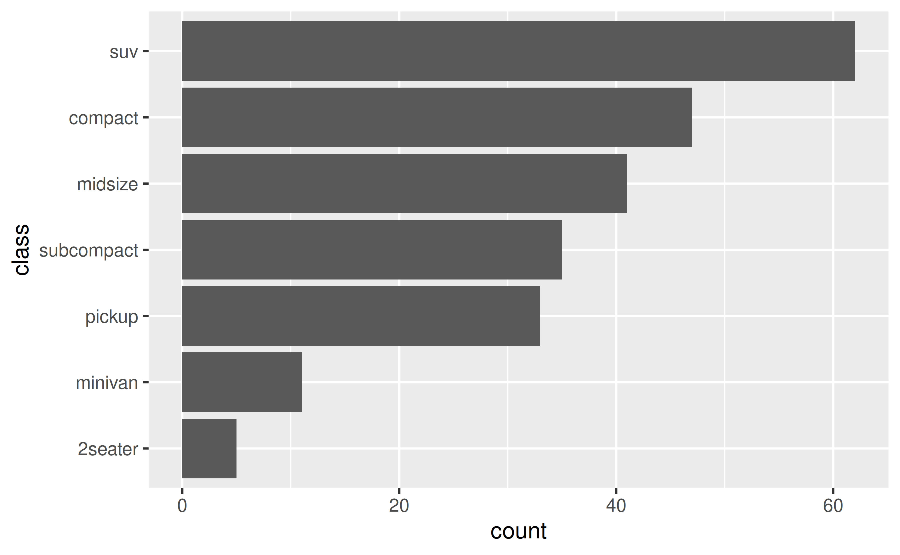
How can I reorder the stacks in a stacked bar plot?
Change the order of the levels of the factor variable you’re creating
the stacks with in the aesthetic mapping. The
forcats package offers a variety of options for doing this, such as
forcats::fct_reorder() to reorder the levels or
forcats::fct_rev() to reverse their order.
See example
Suppose you have the following stacked bar plot of
clarity of diamonds by their
cut.
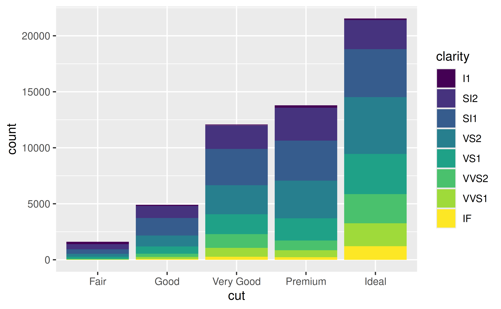
You can reverse the order clarity levels are displayed
in the bars with forcats::fct_rev(). This will also change
the order they’re presented in the legend so the two orders match.
ggplot(diamonds, aes(x = cut, fill = forcats::fct_rev(clarity))) +
geom_bar() +
labs(fill = "clarity")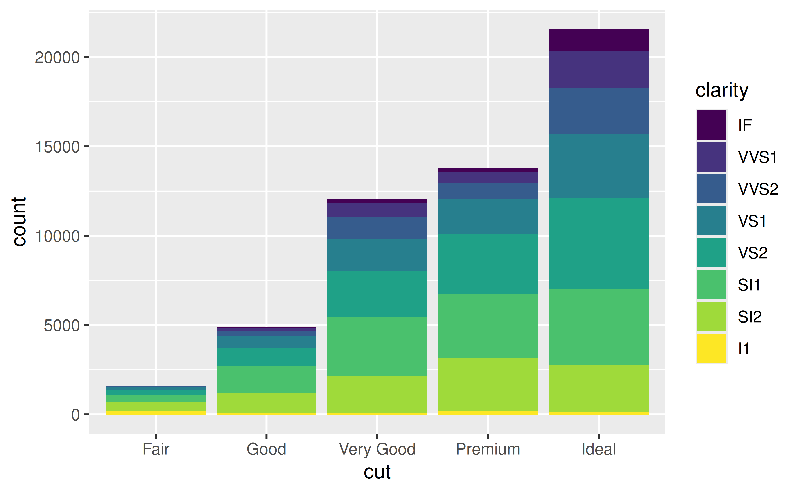
Box plots
How can I control the order of boxes in a side-by-side box plot?
Change the order of the levels of the factor variable you’re faceting
by. The forcats package offers a variety of options for doing this, such
as forcats::fct_relevel() for manual reordering or
forcats::fct_reorder() for ordering by a particular value,
e.g. group median.
See example
The order of the boxes is determined by the order of the levels of the variable you’re grouping by. If the faceting variable is character, this order is alphabetical by default.
ggplot(mpg, aes(x = class, y = hwy)) +
geom_boxplot()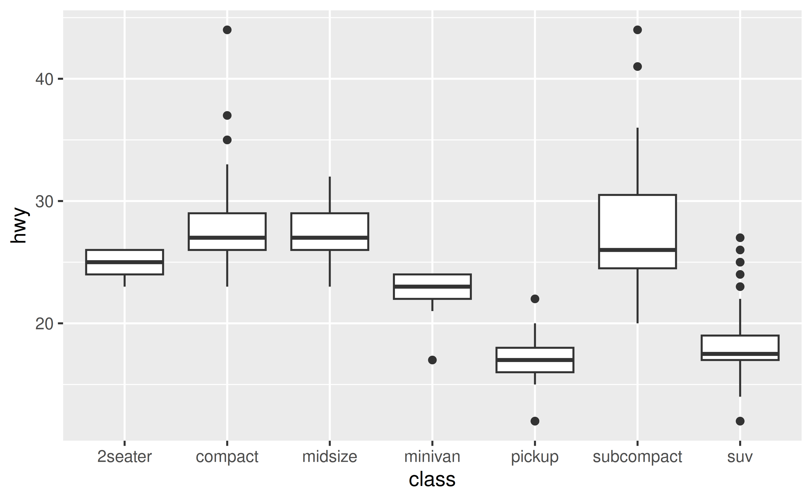
Suppose you’d like the boxes to be ordered in ascending order of
their medians. You can do this in a data transformation step prior to
plotting (e.g. with dplyr::mutate()) or you can do it
directly in the plotting code as shown below. You might then want to
customize the x-axis label as well.
ggplot(mpg, aes(x = forcats::fct_reorder(class, hwy, .fun = median), y = hwy)) +
geom_boxplot() +
labs(x = "class")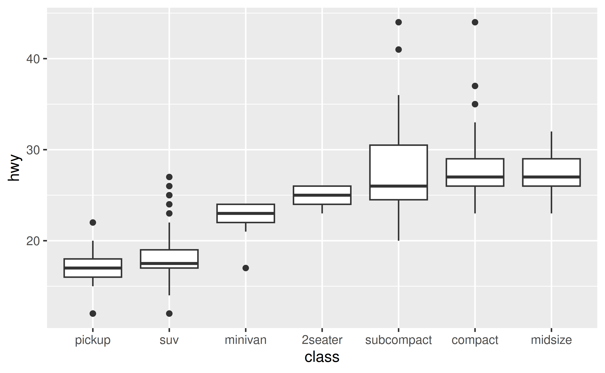
Facets
How can I control the order of panes created with
facet_wrap() or facet_grid()?
Change the order of the levels of the factor variable you’re faceting
by. The forcats package offers a variety of options for doing this, such
as forcats::fct_relevel().
See example
The order of the panes is determined by the order of the levels of the variable you’re faceting by. If the faceting variable is character, this order is alphabetical by default.
ggplot(mpg, aes(x = displ, y = hwy)) +
geom_point() +
facet_wrap(~drv)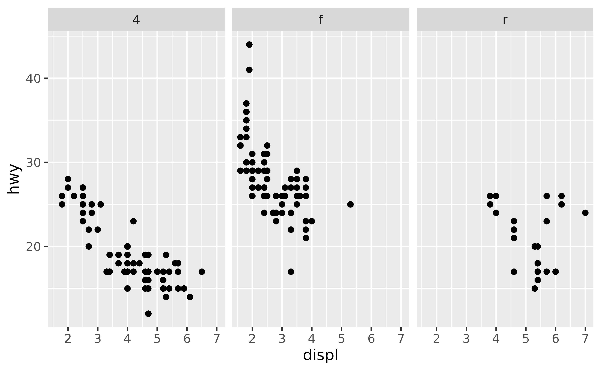
Suppose you’d like the panes to be in the order "r",
"f" , "4". You can use
forcats::fct_relevel() to reorder the levels of
drv. You can do this in a data transformation step prior to
plotting (e.g. with dplyr::mutate()) or you can do it
directly in the plotting code as shown below.
ggplot(mpg, aes(x = displ, y = hwy)) +
geom_point() +
facet_wrap(~forcats::fct_relevel(drv, "r", "f", "4"))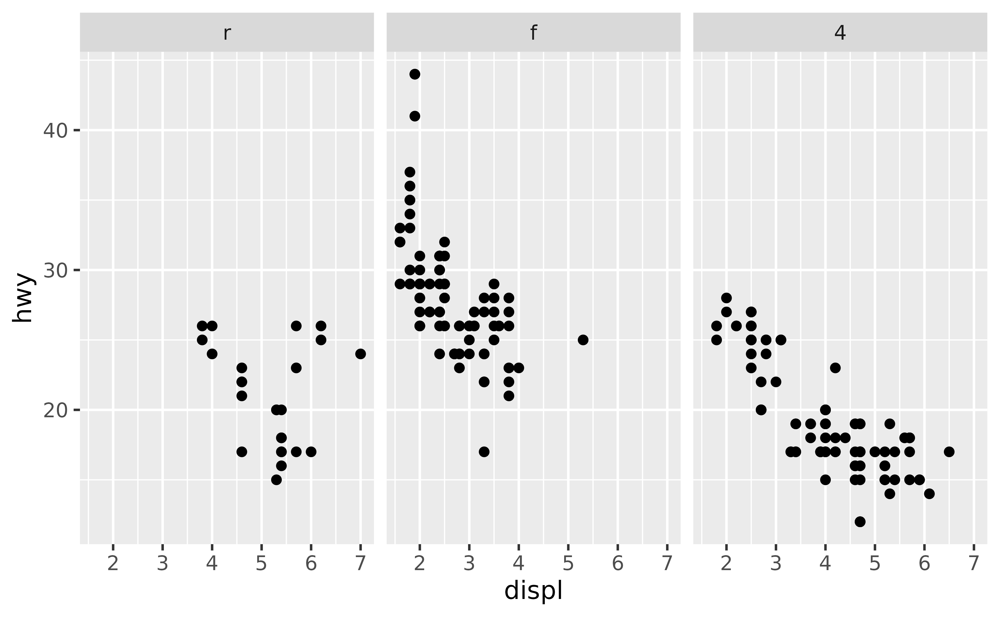
Overplotting
How can I control the order of the points plotted?
If there is a specific point (or group of points) you want to make sure is plotted on top of others, subset the data for those observations and add as a new layer to your plot.
See example
Suppose you have the following data frame.
df <- tibble::tribble(
~id, ~x, ~y, ~shape, ~fill,
1, 0.01, 0, "circle filled", "blue",
2, 1, 0, "square filled", "red",
3, 0.99, 0, "asterisk", "black",
4, 0, 0, "triangle filled", "yellow"
)By default, this is how a scatter plot of these looks. Note that the blue circle is partially covered by the yellow triangle since that observation comes later in the dataset. Similarly the black asterisk appears on top of the red square.
ggplot(df, aes(x = x, y = y, fill = fill, shape = shape)) +
geom_point(size = 8) +
scale_shape_identity() +
scale_fill_identity()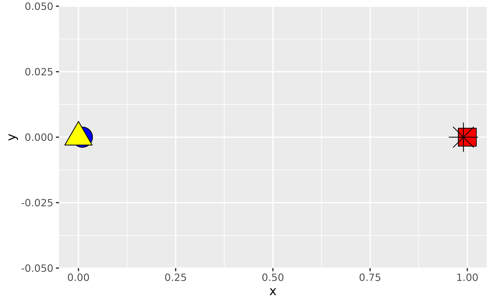
Suppose you arranged your data in ascending order of the x-coordinates and plotted again. Now the blue circle is over the yellow triangle since 0.01 comes after 0 and similarly the red square is over the black asterisk since 1 comes after 0.99.
df_arranged <- df %>% dplyr::arrange(x)
df_arranged %>%
ggplot(aes(x = x, y = y, fill = fill, shape = shape)) +
geom_point(size = 8) +
scale_shape_identity() +
scale_fill_identity()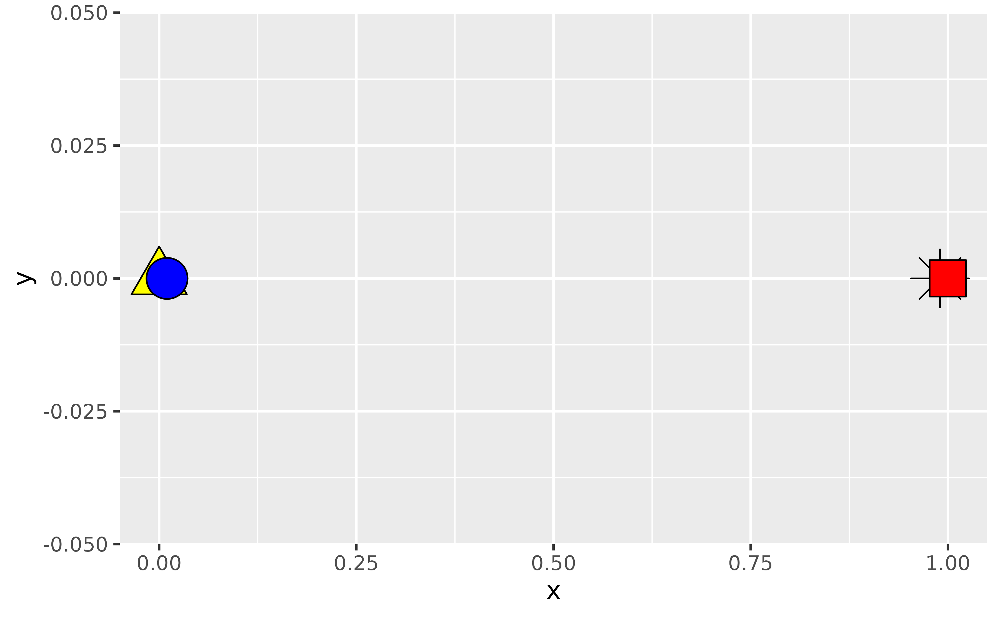
If you wanted to make sure that the observation identified with an asterisk is always plotted on top, regardless of how the data are arranged in the data frame, you can create an additional layer for that observation.
ggplot(mapping = aes(x = x, y = y, fill = fill, shape = shape)) +
geom_point(data = df %>% filter(shape != "asterisk"), size = 8) +
geom_point(data = df %>% filter(shape == "asterisk"), size = 8) +
scale_shape_identity() +
scale_fill_identity()
ggplot(mapping = aes(x = x, y = y, fill = fill, shape = shape)) +
geom_point(data = df_arranged %>% filter(shape != "asterisk"), size = 8) +
geom_point(data = df_arranged %>% filter(shape == "asterisk"), size = 8) +
scale_shape_identity() +
scale_fill_identity()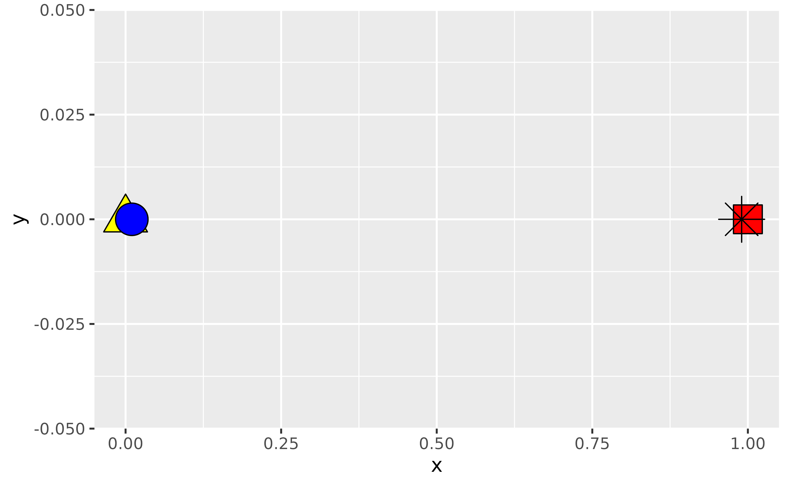